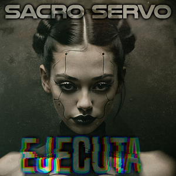

Ejecuta [Álbum 01]
2026 — Registro cerrado
Primer trabajo de estudio que establece el núcleo conceptual y sonoro del proyecto: una fusión de dark industrial, pulsos mecánicos y estética cyberpunk en español.
El disco explora la transición entre biología y sistema, placer y circuito, ciudad y error. Las canciones no narran historias convencionales; documentan procesos: intervención, conexión, sobrecarga y adaptación. La voz funciona como transmisión más que como confesión, y el ritmo avanza entre tensión contenida y estallidos eléctricos.
En este debut, la máquina no aparece como amenaza, sino como interfaz. La ciudad es un organismo saturado de neón y datos. El dolor deja de ser castigo y se convierte en consecuencia del progreso.
Un primer manifiesto sonoro: frío, físico y conceptual.